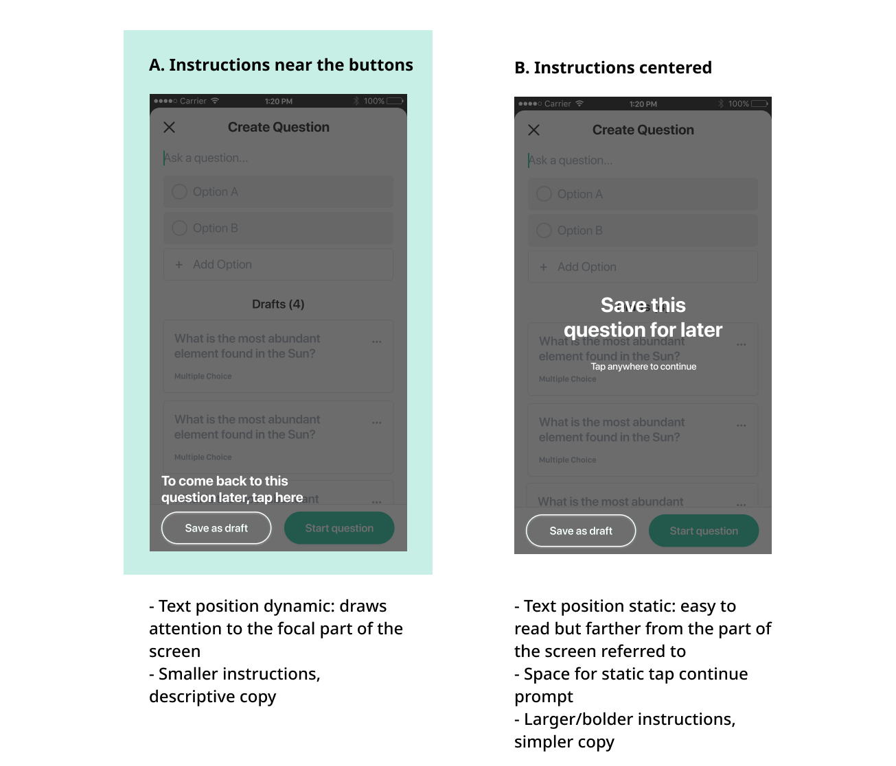

Pollo is an app that that allows for real-time polling, feedback, and interaction between teachers and students.
Timeline
Fall 2019 - December 2019
My Role
Design systems
Interaction design
Prototyping
Platform
iOS App
Android App
Web App
Team
Designers: Cindy Huang, Amanda Yang
Motivation ❔
At Cornell, many professors utilize polling software such as iClickers or Learning Catalytics in class. They use this often in large lectures where it is hard to interact with everyone in the class. Some of the main motivations for polling during class are:
- Taking attendance
- Gauging the class’ understanding of material
- Engaging students during class in an interactive way
The goal of Pollo is to provide a free alternative to polling software through a mobile and web app.
My Contribution
During the Fall 2019 semester, Amanda and I worked on improving the polling experience for students and professors based on these issues that were experienced during previous user testing:- Students are confused by the multiple choice question and answer flow
- Students and professors confuse the join class and create class interaction
- Professors need help on their first time creating a poll
01 Multiple choice Q&A interaction
02 Entry points to create and join classes
03 Onboarding for creating polls
I also created a design system to improve consistency in our visual design and efficiency in the team's future workflow.
01 Multiple choice Q&A interaction
With multiple choice questions, a trend during past user testing sessions was that students were confused by the the content and visual display of the response choices and stats shown at the end. It was unclear which answer the student chose and which answer was correct, since there are many combinations of correct/incorrect/no right answer and chosen/not chosen by the student that can occur. We also reevaluated what results the student needs to see, including detailed percentage breakdowns, visual bar graph of responses and the total number of responses.
Here is the flow of the question card states that we considered at first for answering a multiple choice question:

However, with this interaction, the green color of the selected response when the poll is live can be mistaken for feedback that the choice was correct. Also, when the final results are shared with the class in the last step, the difference in color intensity may not be explicitly clear that the brighter color indicates the student’s selected response. The red/green correctness indicator is also not accessible for some colorblind students.
So, we explored different ways to show correctness and the student’s selection below.

We chose to move forward with the radio button treatment for choosing an answer since it is the most clear indicator of selected, and is consistent with students’ mental model of multiple choice. In our final iterations we incorporated the icons to show correctness without relying solely on color. Next we continued to explore the use of percentages and bar graphs for results.

Students want to know how they did relative to the class. The quickest way to communicate this is visually, and exact percentages are not necessary to convey relative performance. So, we chose A.
Deliverables
Here is the updated, full flow for answering a multiple choice question!

02 Entry points for creating and joining a class
Another common mistake from students was accidentally creating a class instead of joining one. Previously, entry points for both actions were accessible from the home screen, regardless of whether the user is a student or professor.

Our product is a single app for both students and professors to use for their own purposes. Their primary objectives for polling software are very separate: either participating in joined polls, or creating polls for a class. So, for different use cases, there is a different primary action. Since users can toggle between their joined and created classes, I decided it would be more logical if the primary actions toggle as well, so that the “+” icon would not be necessary.
For consistency, the primary CTA for the joined and created screens should have the same placement. But, a different visual treatment would help as a cue that the CTA is changing along with the screen’s content. So, I designed different ways to visually show a change in the primary action while staying consistent with the app’s design system.

I chose a light gray background to contrast the dark bar color on the Joined screen while keeping the behavior of the button consistent in inactive/active states.
Deliverables
Here is the final interaction for toggling between student and professors’ use cases:

03 Onboarding 🚢
With creating a poll, our team designed and engineered a few features to help professors customize the way they create polls to fit their varying workflows. These options are not all immediately clear, so we wanted an onboarding flow to guide first time users through creating their first polls.
In particularly, we want professors to know that:
- Starting a question without inputting anything will autofill with choices "A", "B", etc.
- Selecting an option marks it as a correct answer.
- You can either save the question to poll later (planning lectures in advance) or start polling on the spot.
These features are important for professors to know, as they allow them to use the app to fit their own style of creating questions for the class. Many professors like to create quick or generic A-D questions if the full questions are already incorporated in lecture slides or are written on the board. Some use polls to quiz students or just want to show them which answer is correct. And we also allow them to choose whether to plan questions as drafts or make questions to immediately start polling during lectures.
Here is the final prototype.

Here is how I got there.
First, I mapped out different orderings and lengths of the onboarding flow to mimic different ways that a professor would create a question and determine the best way to teach the process in the app. They range from concise to very detailed, and vary in the ordering of customization vs. autofill.
I decided on Flow 3 because it was the most comprehensive, highlighting all features without unecessary steps. It also presented the autofill option more as a secondary option to filling out each question. I chose this because past research showed that the primary use case is for professors planning out questions in advance rather than on the spot during lecture. Still, instructions for autofilling is very important for professors to know how to poll spontaneously or still use Pollo even if they have questions on lecture slides that don't fit within our length/format constraints to display on the app.
Visual explorations
I also explored how to visually highlight both the specific parts of the screen (buttons, text fields, etc.) and the text for onboarding instructions. I used a dark overlay and white outlines and text to emphasize components and provide context.
Option A is more dynamic which brings people's attention to the buttons highlighted. But, the copy is less concise and the motion does not leave a good space for a "tap to continue" prompt.
Option B makes the text the primary focus with a heavier weight, fixed position, and simple copy.
I chose A based on feedback that the motion design (see prototype above) provides clearer focus on where to click and how to navigate.
Further onboarding designs for the first launch of the app are in progress.
P.S. Special shoutout to my wonderful co-designer and mentor Amanda Yang and the rest of AppDev for teaching me so much!